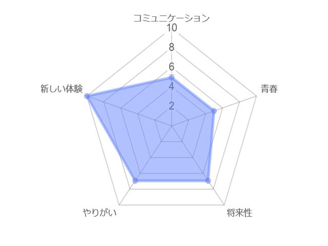

インターン
就活への第一歩！
気になっている職種を実際会社で体験できる
一年次の冬頃に行われる個人インターンは自分の気になる業種の会社に4日間行き、実際の業務を体験できます。
ぎょうじの特徴が一目でがわかる！レーダーチャート
インタビュー
リコージャパン株式会社に行ったKさんにインタビューしました。
リコージャパンはどのような会社ですか？
主にコピー機や複写機などの販売や製造、メンテナンスを行っている会社です。
カスタマーエンジニアやシステムエンジニア、営業といった職種があるかな。
どんなことを体験しましたか？
営業と、カスタマーエンジニアの仕事に同行しました。あと、最終日に社員の方にリコージャパンの製品を使ったプレゼンをしました。
あとは…COP25というものに企画みたいなのを考えてくださいってことをしました。
どんなことを体験しましたか？
営業と、カスタマーエンジニアの仕事に同行しました。あと、最終日に社員の方にリコージャパンの製品を使ったプレゼンをしました。
あとは…COP25というものに企画みたいなのを考えてくださいってことをしました。
すごく難しそうなお題ですね…。COP25とはなんですか？
正直よくわかんなかったです（笑）
同行者と「なんだこれ？」って言いながらやってました。
私も多分そうなります（笑）最後に体験できてよかったことはありますか？
元々自分の希望職種がカスタマーエンジニアだったので、実際現場を見て業務内容が明確になったのと、カスタマーエンジニアの方ともコミュニケーションが取れて…
エンジニアになりたい気持ちは高まりましたね。
オープンキャンパスへGO!
オープンキャンパスへお越しいただいた場合、実際インターンに参加した先輩にお話を聞くことができます。
会社の雰囲気、働くってどんな感じだった？ 就活が不安、など気になったことを気軽に聞いてみましょう！